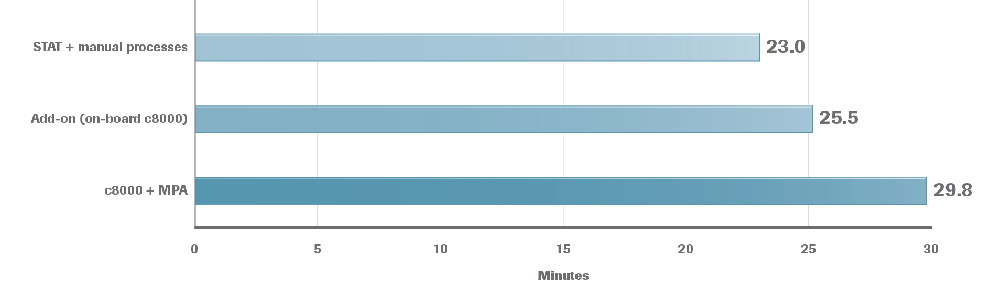

cobas 8000 with MPA Troponin TAT by Order Designation 18
One of our current customer's data shows that their STAT + manual processing receipt-to-result times are down to 23 minutes.
When they have an add-on or a doctor calls to add a test on when the sample is already in process, they found that they could turn around a Troponin result in 25.5 minutes.
If it was not a designated STAT and was simply loaded onto the MPA + cobas 8000, they then received a turnaround time of approximately 29 minutes.
You can use the MPA for total lab automation and still achieve turnaround times of receipt-to-result in less than 30 minutes.
- Helps to eliminate the possibility of human error.